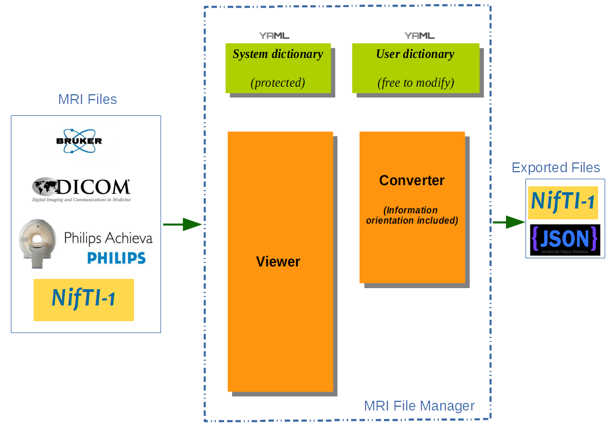
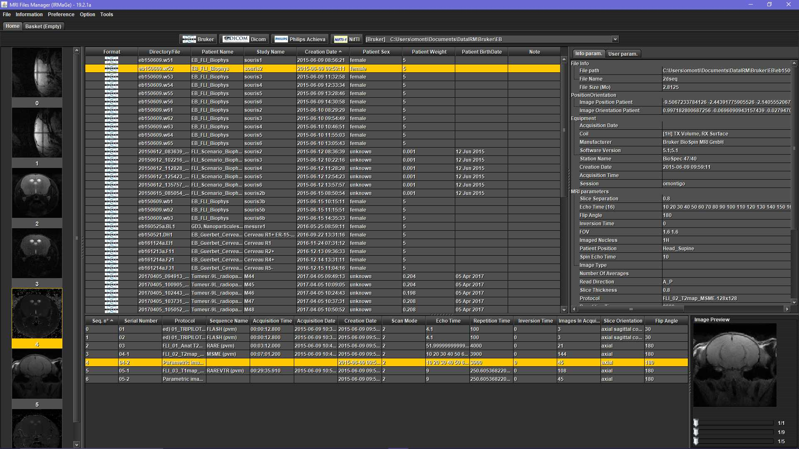
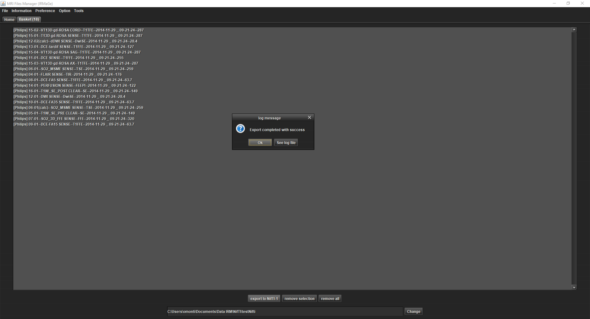
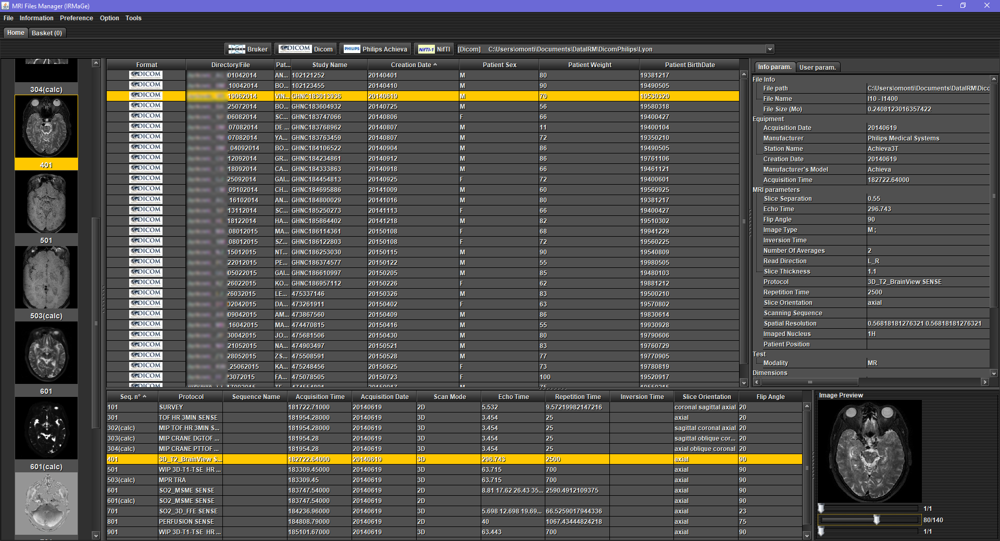
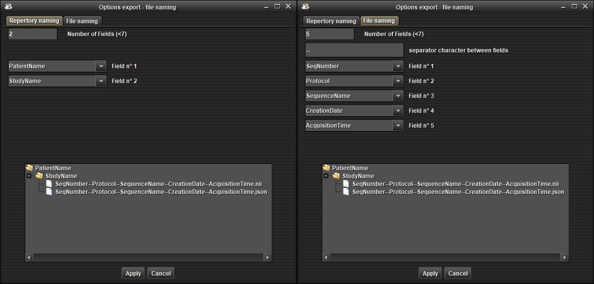
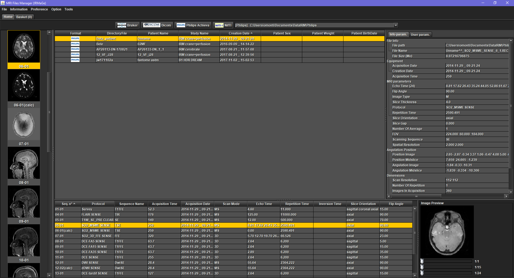
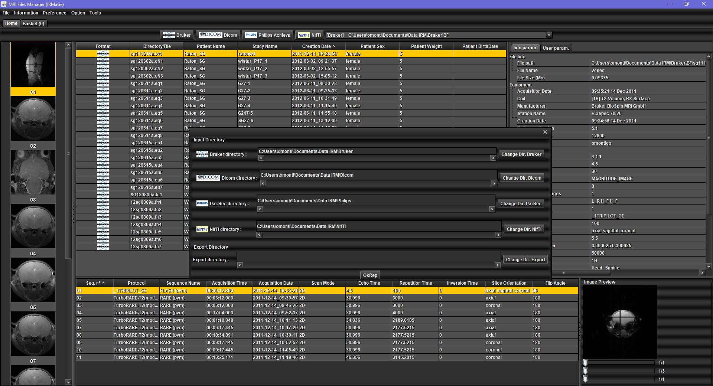
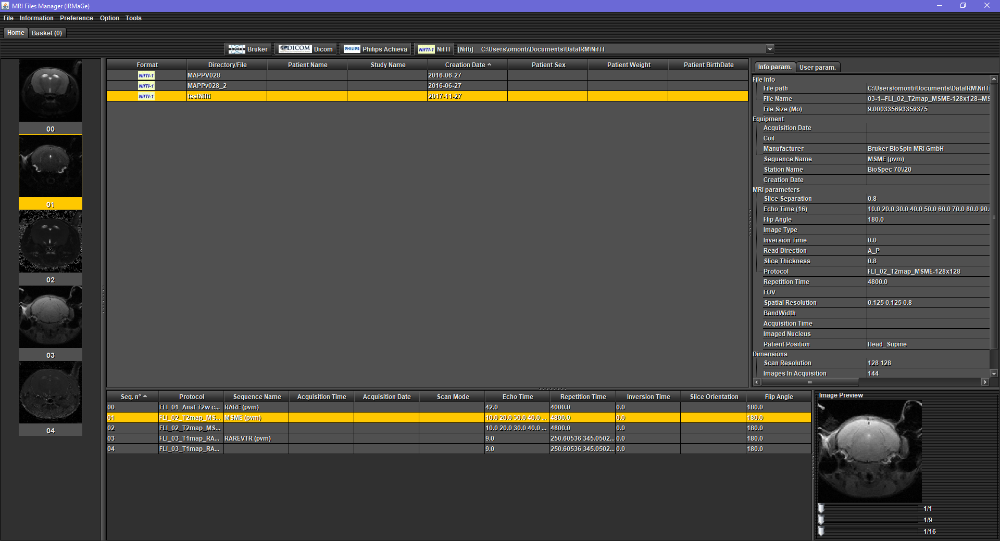
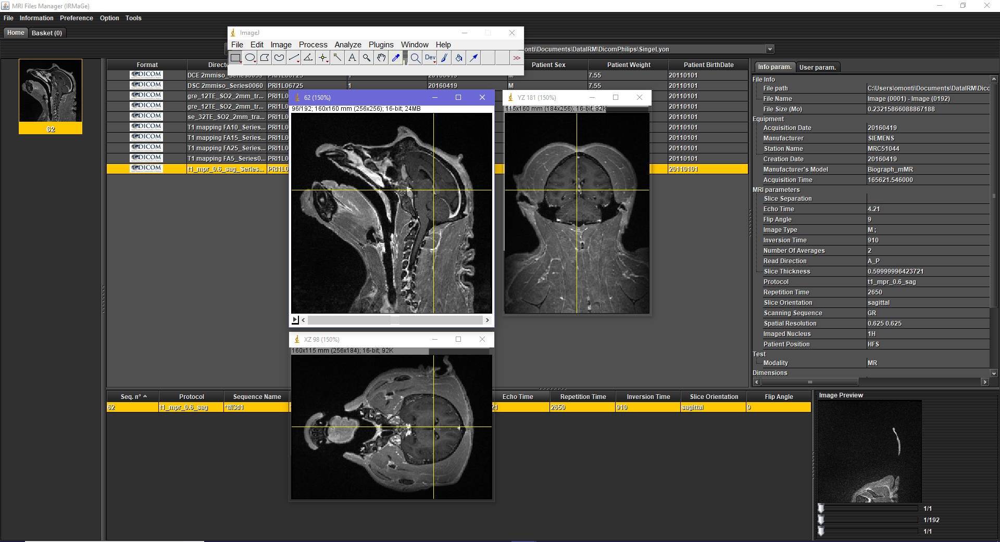
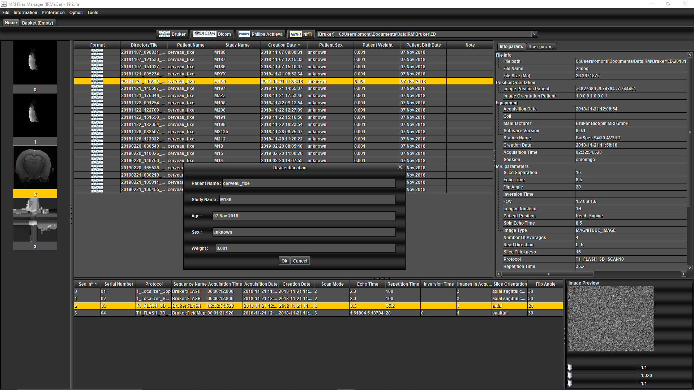

What is MRI File Manager? - Synoptic - Screenshots
MRI File Manager allows the reading of some raw and processed data files from MRI Spectrometers :
- Bruker Paravision PV5 & PV6 (raw data of magnitude type).
- Dicom from Bruker, Philips, Siemens.
- Philips Achieva (Par/Rec & Xml/Rec v4.2).
- Nifti-1 (with or without Json).
It also allows for converting MRI images to Nifti-1:
- Export MRI data in Nifti-1 format until 5 dimensions of the image (x, y, slice, frame, temporal).
- Json files are created and associated with Nifti files in order to contain MRI parameters (see 'Irmage Json' page).
- an option of anonymization allows to hide sensitive informations about the patient (name, age, sex, weight).
- adaptation of orientation information in Nifti headers (tested on SPM, FSL).
- option of customizing the Nifti file names.
It can be launched in standalone mode or by script with options (from Matlab, Python, ....)
It contains 2 Yaml files that permit the extraction of MRI parameters in a personalized way (see 'MRI Dictionaries' page).
It's written in Java and is heavily based on the ImageJ software.
It can be run on Linux, MacOS and Windows.
It requires only Java 8 (or more) pre-installed on your machine.
|
 |
|  Viewer tab (Bruker) |  Basket tab (for converting to Nifti) |
|  Viewer tab (Dicom) |  Options export files naming |
|  Viewer tab (Philips) |  Data IRM folder |
|  Viewer tab (Nifti) |  Image opened with ImageJ |
|  Anonymization |